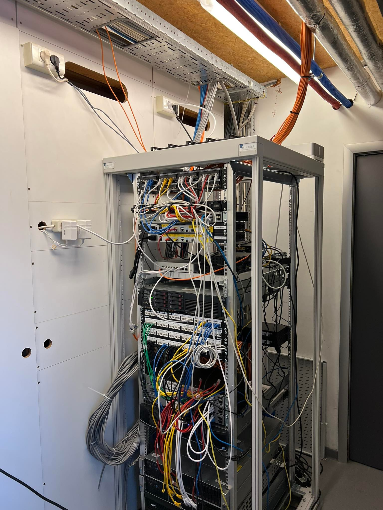

Team
Mijn dag vandaag startte om 7:30. Ik was vandaag een uurtje eerder aanwezig dan nodig zodat ik in alle rust hulp kon krijgen bij het invullen van de vragen omtrent de casestudy. Iemand van het IT team heeft mij hiermee geholpen. Samen met hem heb ik zo goed als alle vragen kunnen beantwoorden.
Toen ik hiermee klaar was, ben ik richting de service desk getrokken. Zij hadden mij gisteren een probleem laten zien en gevraagd of ik hiernaar wilde kijken in de hoop dat ik een mogelijke oorzaak van het probleem zou vinden. Ik zelf heb een paar oorzaken gevonden die mogelijks het probleem zouden kunnen creëren. Maar of dit ook effectief een oplossing ging bieden was natuurlijk af te wachten.
Ik was niet de eerste die naar dit probleem heeft gekeken dus had ik weinig hoop dat één van mijn denkpistes effectief goed zouden zijn aangezien ik het moest afleggen tegen mensen met 10+ jaar ervaring. Toch werd er mij verteld dat mijn ideeën zo slecht nog niet waren en ik hun zeker verder geholpen heb. Stiekem werd ik toch een beetje blij/trots toen ik dit hoorde.
Nadat we dit probleem afgerond hadden, heb ik meegekeken naar hoe de dag aan de service desk verloopt. De service desk hun taak mag niet onderschat worden. Support voor klanten die met een probleem zitten is super belangrijk. Wanneer er iets niet werkt kan dat catastrofale gevolgen hebben en als de service dienst deze problemen kan oplossen heeft dat een grote invloed op de gemoedstoestand van de klanten.
Vervolgens was het tijd voor middageten. Op vrijdag middag is het de traditie om broodjes af te halen. Deze hebben me erg gesmaakt. Gelukkig mag ik volgende week terug naar school waar ik me beter aan mijn goede voornemens ga kunnen houden. Dat is op het vlak van eten deze week toch een beetje fout gelopen…
Na de middagpauze heb ik de fysieke serverroom van het bedrijf mogen zien. Eerlijk gezegd had ik gedacht dat deze wel groter zou zijn. Er werd mij verteld dat het tegenwoordig voordeliger is om gebruik te maken van virtuele servers. De fysieke servers worden alleen gebruikt voor oude klanten en intern gebruik.
Ten slotte heb ik mijn dag afgesloten met het bezoeken van het magazijn. Hierin stonden oude/reserve spullen voor het personeel en de klanten.
Dit was het dan, mijn laatste dag als stagiaire van TCOG. Ik heb er zelf erg veel van genoten en heel veel bijgeleerd. Ik besef echt dat ik zeer veel geluk heb gehad bij mijn stageplaats. Ik heb hier zo goed als alle facetten van de IT leren kennen. Voor mij was het echt een superweek. Een fantastisch team en een prachtige werk omgeving. Elke werknemer was super positief over hun job en na deze week snap ik helemaal waarom. Iedereen van heel het bedrijf wouw met plezier hun hulp aanbieden of me iets uitleggen en zelf toen ik gedag zei werd er nadrukkelijk herhaald dat als ik ooit hulp nodig zou hebben voor wat dan ook, ik zeker niet moest aarzelen om ze te contacteren.
Echt een dikke merci aan iedereen, jullie zijn echt een topteam.